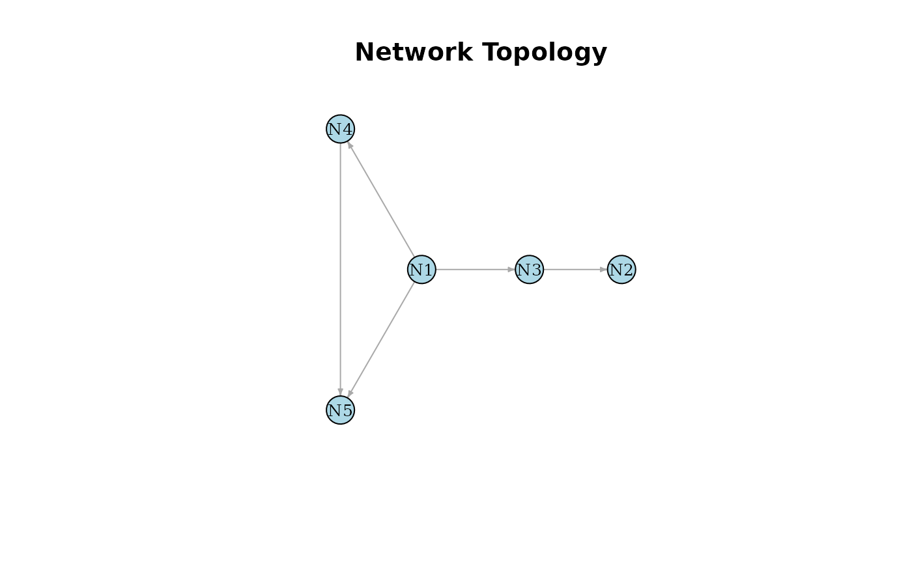

Visualizes a single directed network topology. For instance, a synthetic "true" network
generated by GenerateNetwork().
Arguments
- trans_matrix
A square matrix representing the network topology and Boolean rules (e.g., the output of
GenerateNetwork()). Elements greater than 0 indicate a directed edge.- node_names
Character vector. Optional names for the nodes. Defaults to "N1", "N2", etc.
- ...
Additional graphical parameters passed to
igraph::plot.igraph().
Examples
# 1. Generate synthetic 5-node network topology
set.seed(123)
true_network <- GenerateNetwork(num.node = 5)
# 2. Plot the generated network
plot_network(true_network)
